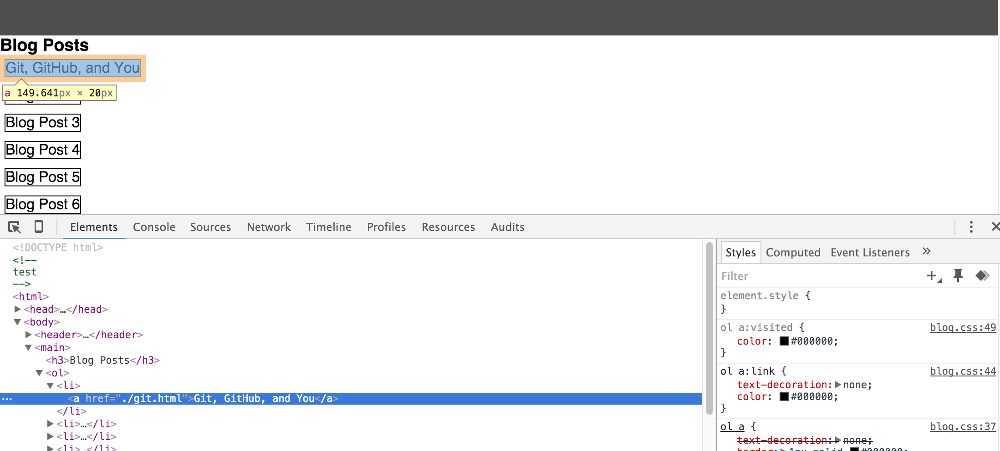

Walk the Line: Margins, Borders, Padding - What's the Difference?
CSS operates using what is known as the CSS Box Model. You can find a link here that will provide you with an image of what the box model looks like. What this means is that while HTML looks at the entire document as an outline with the indents forming a tree structure from a content perspective, CSS looks at each item as a box, sitting in the blank space that is your empty website. More accurately, it treats each object as a series of boxes, which when utilized properly will allow you to control the way everything on your page looks and behaves. The smallest box is that of the content itself, which is pulled from the HTML and is either images, words, etc. Surrounding this is the padding, which is a transparent layer between content and border, and can be used to clear out a space around the content. Around the content and padding is the border, which can be a visible layer if a size, color, and type (dashed vs solid) is assigned to it. The border provides a tangible separation between whatever the content within the tags are and the rest of the page, which can be valuable if you're making a side section, an explanatory note, or if you just want to make a link look more like a button. Surrounding the border is the margin, which is another transparent layer that is used to clear space around the object.
You might be thinking that margin and padding sounds like the same thing, and you wouldn't be entirely wrong. At the most basic level, they DO do the same thing - clear a space around the content. However, it is in the subtleties that their difference becomes clear. The margin exists on the outermost layer of the object - if you were to increase it, you would effectively push all of the other content on the site away from this box. This can be useful to create a section for either a block quote or maybe an explanation box. The padding, on the other hand, exists INSIDE the border, so if you expand it, you also increase the (potentially) visible border around your content. More subtlely, the padding also increases the dimensions of the actual element, while margin only adds or removes white space from around the element without changing its dimensions. Thus, margins are generally used when you need space between different elements, and padding is used to create space between the content itself and the box that contains it.
 Google Chrome's DevTools (View>Developer>Developer Tools) is a great tool to see how margins, padding, and borders look and behave. Really, it's a great tool for any CSS sandboxing, but we always need to remember to avoid rabbit holes when we can. As you see in the image above, it's an interface that comes up and shows you the HTML of the site in its outline form, with the CSS styling of each element visible next to that. When you hover your mouse over any element within the HTML, as I've done with list item 1 (a blog post titled Git, Github, and You), DevTools highlights the different boxes in the space on the page. Try opening devtools in your browser, and hover your mouse over the tag for that screenshot (hint - it's in the third
tag). If you have both margin and border, then two different color boxes will be visible within the space, showing you the visual implications of each property. This image uses a margin, border, and padding, so you can see all three colored boxes represented, to help visualize what the box model means within a real website. Now, if you go into the CSS section of devtools, you can actually try unchecking any of the properties that are listed, or you can even type your own properties into the field, and then those changes will be reflected in the page immediately. These changes won't be saved when you close or even refresh the page, as Chrome will reload the source code, but this is a great way to experiment with different properties in a very fast manner.